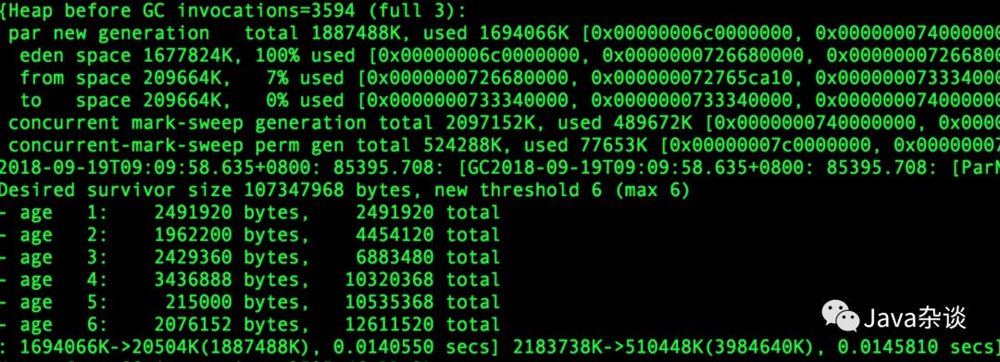
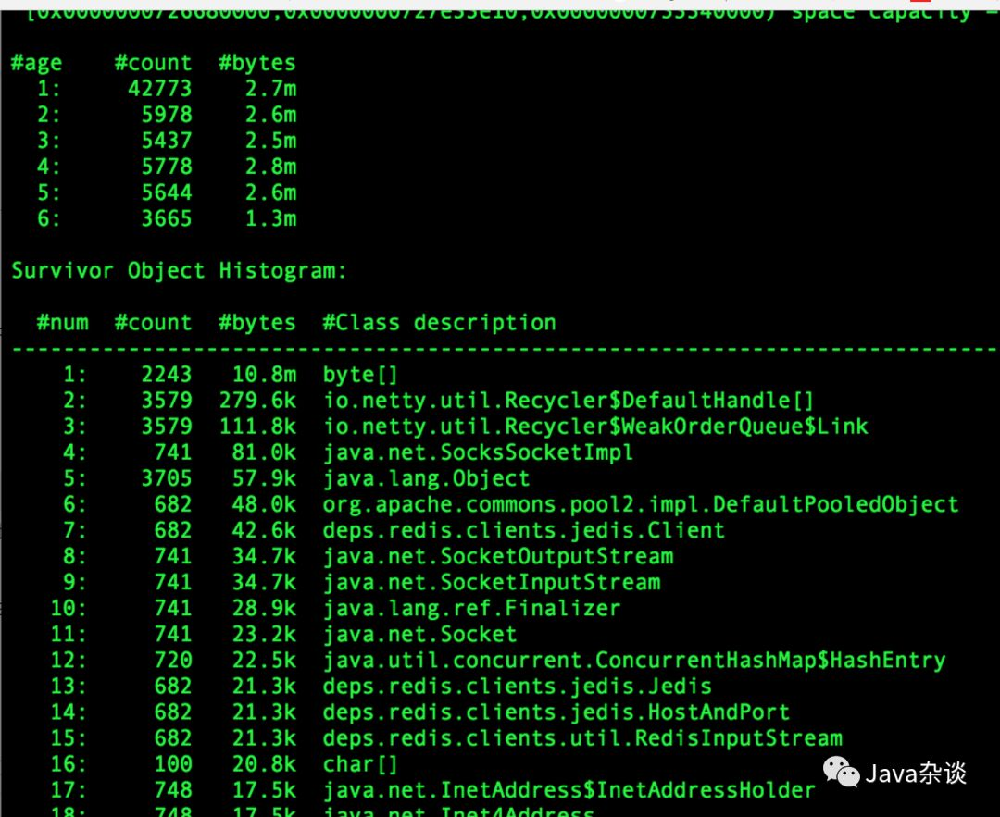
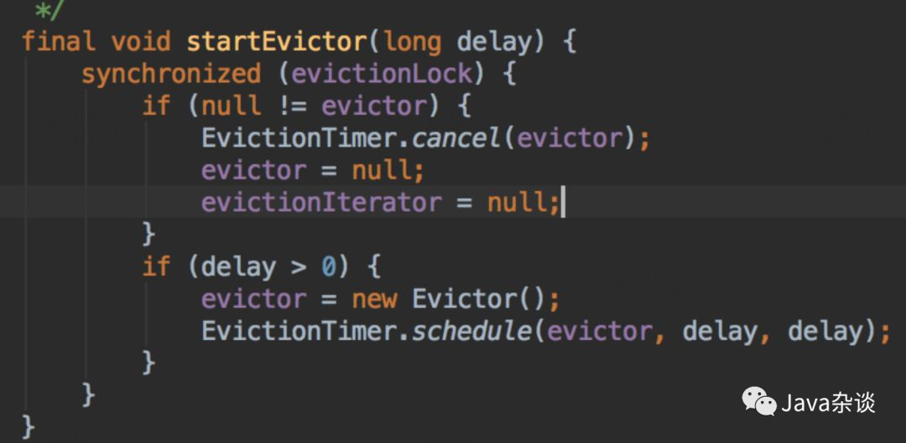
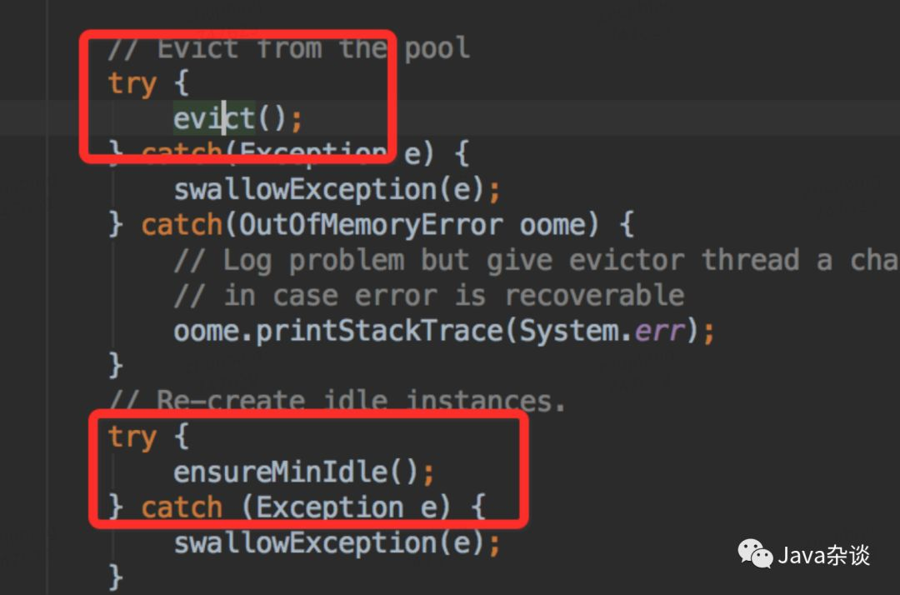
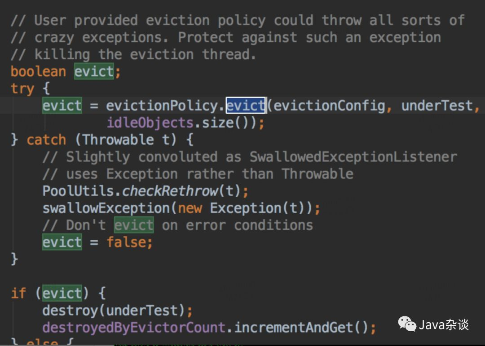
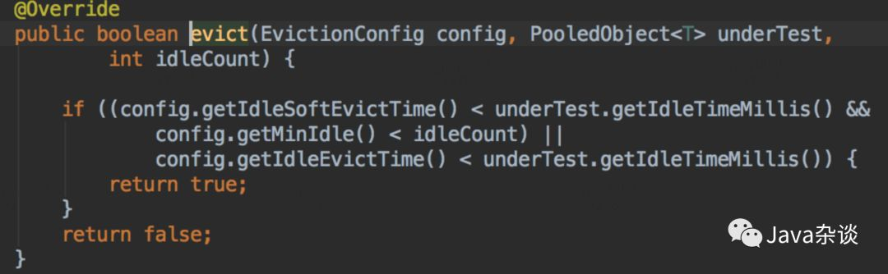
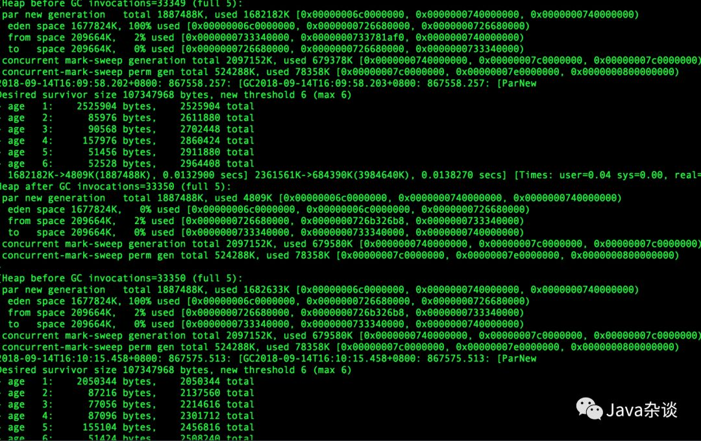
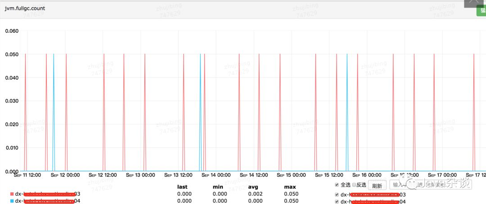
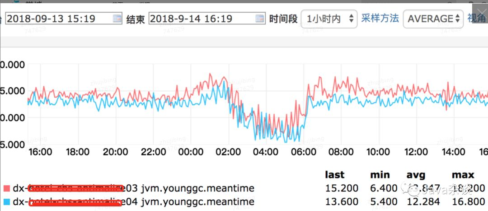

Redis client链接池配置不当引起的频繁full gc
现象
笔者负责的一个RPC服务就是简单的从Redis Cluster中读取数据，然后返回给上游。理论上该服务的对象大部分都应该是朝生夕死的，但是笔者查看gc log 的时候发现 age >=2 的对象还真有不少，甚至和age=1的对象差不多。也就是说对象从eden晋升到Survivor，之后的每次young gc 这些对象都是在Survivor区域中移动，直到晋升到old 区域中。GC log 如下：

解决过程
因为只需要查看Survivor中区域的对象，使用JVM自带的命令就不太合适。笔者推荐用唯品会开发vjmap（他只支持CMS不支持G1），他能查看各个age的对象。笔者使用它查看age>=2的堆栈，堆内对象分布如下：

其中最令人奇怪的就是deps.redis.clients.jedis.Jedis这个对象。因为这是链接Redis Cluster的对象，理论上只要流量没有大的波动不会有大量的创建活动。而且Jedis本身会持有Sokect、OutputStream、byte[]等对象。
笔者找到了创建Jedis对象的地方进行埋点，发现基本上每六分钟就会销毁和创建一批Jedis对象。因为知道Redis client 采用的是链接池的方式，就是看了一下GenericObjectPool代码，发现有个定时任务检测对象。关键代码如下：




从上面代码我们看出，每隔一段时间，就是检测对象池里面对象，要是发现对象空闲时间超过一定时间，就会强制回收；然后又发现链接少于minIdle了，开始创建对象，以满足mindle。笔者所在公司封装Redis client 设置的检测轮询时间为6分钟。
上面问题已经找到了，解决就比较简单了。因为配置的mindle过大导致，导致链接池里有大量空闲。项目中配置的mindle为32，修改为3测试上线观察。之后gc log如下：



上图中dx04是优化之后的，dx03是优化之前的，从图中我们可以看出full gc次数由一周20次降为一周4次，young gc的时间平均下降了1.5ms左右（毕竟能减少对象在Survivor中的移动）
总结
作为项目的ower，我们一定要清楚了解业务特征。看看gc log是否符合业务特征应该呈现的gc log。如果不符合，使用合适的工具是查找原因，你一定有所收获。